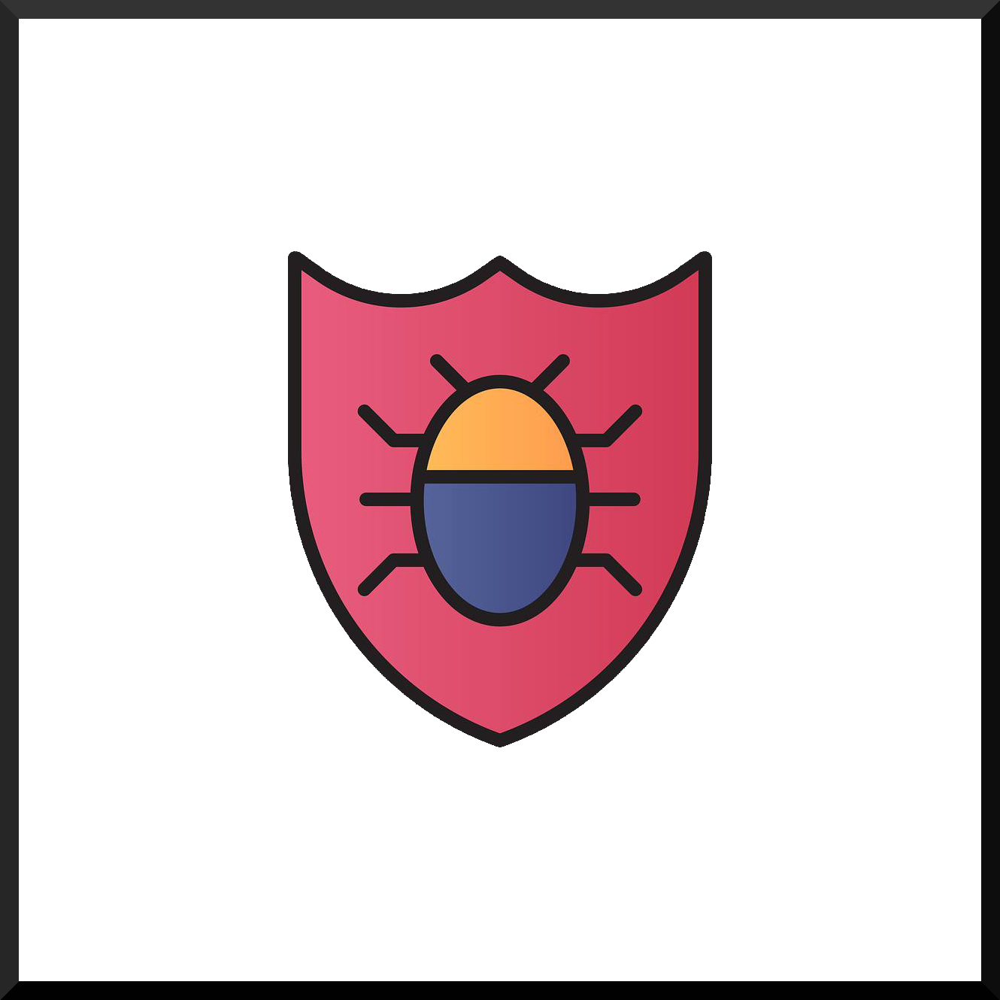
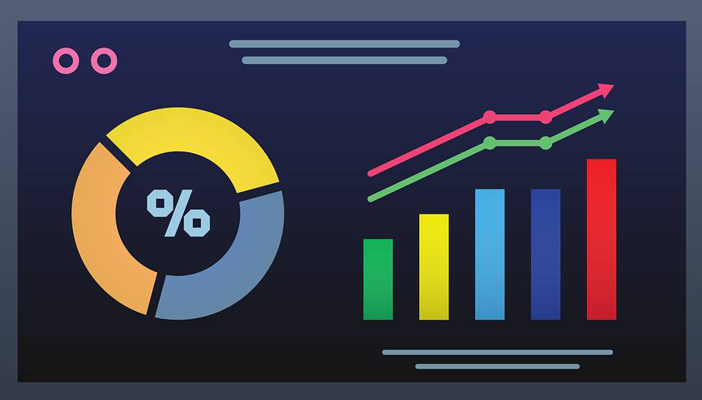
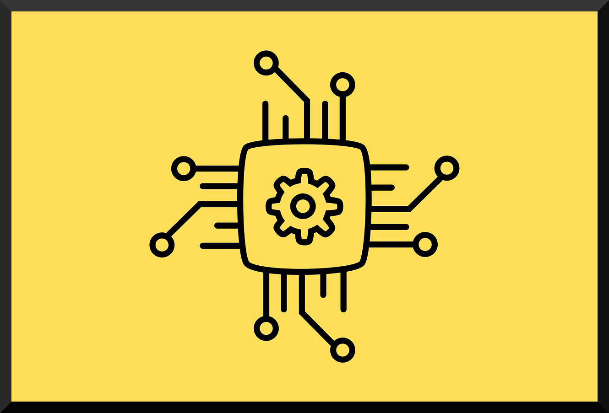

About  Cydog Browser
Cydog Browser
Have you ever experienced the joy of finding what you're looking for? Cydog Browser came about because the current system can't sustain that joy anymore. Every browser on the market, even the independent ones, are get-rich schemes to harvest your data in new and unique ways.
Many companies claim their browsers are safer, more private, or inherently more secure than their competitors. After scouring millions of lines of code, it has become clear most of them are not living up to their claims. Even companies open-sourcing their code are making it incredibly difficult to trace. In fact, there is concern average users cannot trace open-source projects to such a degree they have to rely on others to tell them its safe. Sure, we should trust others, as this is the basis for society. But, in a big data world where manipulation is money, this is doing more harm than good. No money is made from this browser project. There is no reason to open source our code, like our competitors, who only do so largely because it gives them credibility and cover with "professionals" who advocate for their platform(s). At the end of the day, we can't maintain safety for our users if we become open source, as those same "professionals" will harvest vulnerabilities, leveraging their skillsets (that you don't have) to find new and unique ways to harvest your data by defeating our systems.
At Cydog Browser, the goal is to develop a minimal experience so you can explore the webspace in peace without all the manipulation but with all of the value. Welcome to the philosophy behind Cydog Browser. We hope you'll join the first social community focused browser - a browser by the people, for the people, and of the people.
|  | Learn about bugs |
|  | Learn about your data |
|  | Learn about our design |
Learn about privacy |
Bugs and vulnerabilities
Cydog Browser utilizes open-source projects as its backbone, including Chromium and WebKit. On Android, WebView was a better fit in terms of privacy and vetting. It also has a better track record when it comes to bugs and vulnerabilities than its suped-up counterpart. If you are having engine-related bugs or if you're worried about security vulnerabilities, the same browsers will have the same bugs and vulnerabilities as Cydog Browser. They may patch a security issue with their own code but a patch doesn't solve the problem. Its a temporary fix to a problem that must be fixed by the Chromium or Webkit team and then loaded onto your device by layers of manufacturers. Its not that you shouldn't believe that patches do something. Its just that you shouldn't think a patch actually works as a full solution to a bug or vulnerability related issue. Cydog Browser preps in advance for vulnerabilities by determining areas that will likely become issues in the future and patching them before they reach critical mass. Think of this like a "bug bounty" we engage in to make our browser ready before anything happens. This strategy is successful because we don't have to worry about making money. Usually, browser companies implement features to help them make money from your data. These features are almost always the kinds of features that create the most bugs and vulnerabilities. Our competition suffers from these woes and we do not, as money is not the objective of Cydog Browser.
Data protection
Our service does not harvest or collect your data in any way. We also do not hook into any services that could potentially harvest your data. No application-level trackers means you are only tracked when you visit a webpage (if that webpage uses tracking technologies). We utilize block lists to limit this data. You'd be surprised how much the "phone-home" ecosystem associated with accounts and logins guarantees foul play. Even Apple got worried and started proxying Google Safe-Browsing hits so your data doesn't leak. This is a big problem in the industry right now. We know that unnecessary connections increase the vectors of security related and data protection issues. And yet, its tough to make money off your users without them. We don't have accounts. Everything is local. We do not use trackers. Its refreshing, isn't it?
Browser minimalism
Minimalism is a sort of philosophy, especially in design, where minimal form is used to garner maximal functionality. There are a lot of versions of this particular paradigm. However, thats the one we are using for ours. Cydog Browser does not add features that make it more difficult for you to accomplish your daily tasks. In fact, the design was made to maximize your hand usage and productivity while catering to our privacy-related techniques. At some point, we will have someone conduct research to scientifically prove just how much faster you are when it comes to daily use with Cydog Browser versus our competitors.
Your privacy
Cydog Browser has developed the most intricate technological process embedded in modern mobile browsing to date. Every click you make on our browser creates a sort of entropy that is used to randomize your online presence and obfuscate your browsing habits without an algorithm working behind the scenes. Algorithms can get hacked or manipulated but your clicks cannot. This process was extremely involved and we have even more intense versions of this feature coming in the future. We may not release all of these techniques but some of them you can vet in realtime using the Privacy Corner on your Android and iOS applications.
Are you a member of the press interested in Cydog Browser?
Our branding kit is available as a download below. Guidelines for use: use the graphics as they are in their original aspect ratio. You must use our logo on either a black or white background, even though we have provided an image with a transparent background to make your day better. Feel free to contact us here.